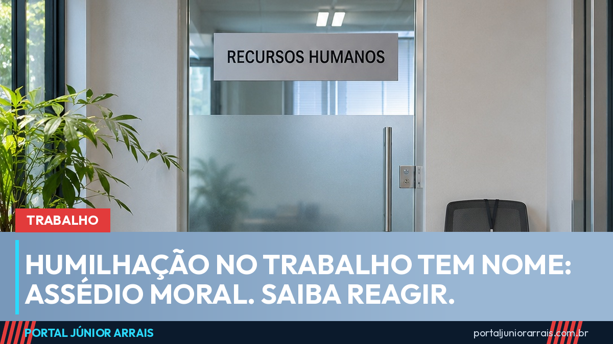

Assédio moral no trabalho: o que é, como provar e o que o trabalhador pode pedir

Assédio moral é a exposição do trabalhador a situações humilhantes e constrangedoras de forma repetida e prolongada, que atingem sua dignidade e deixam o ambiente de trabalho insuportável. Uma bronca isolada ou uma cobrança por resultado, feita com respeito, não é assédio. O que caracteriza o problema é a conduta abusiva que se repete, venha ela do chefe, de colegas ou até de subordinados.
Exemplos comuns
- xingamentos, gritos e piadas ofensivas, em público ou no particular;
- isolar o trabalhador, deixá-lo sem tarefas ou proibir colegas de falar com ele;
- metas impossíveis acompanhadas de ameaças ou de "castigos" vexatórios;
- espalhar boatos, ridicularizar a aparência, a religião, a orientação sexual ou a condição de saúde;
- pressão constante para que a pessoa peça demissão.
O que diz a lei
A CLT não tem um artigo com o nome "assédio moral", mas a conduta é ilícita pelo Código Civil (arts. 186 e 927), que obriga quem causa dano a reparar, e pela própria CLT, que trata do dano extrapatrimonial a partir do art. 223-A. A Lei 14.457/2022 obrigou as empresas com CIPA a adotar medidas de prevenção e combate ao assédio, com canal de denúncia e treinamentos periódicos.
A CLT traz tabelas de valores para essas indenizações, conforme a gravidade. O STF decidiu, nas ações que discutiram o tema (ADIs 6050, 6069 e 6082), que esses valores servem de parâmetro e podem ser ultrapassados pelo juiz quando o caso exigir.
Como juntar provas
A prova é o ponto mais difícil. Ajudam: mensagens, e-mails e áudios; anotações com datas, horários e o que foi dito; nomes de colegas que presenciaram; atestados e relatórios médicos ou psicológicos; e registro de denúncia no canal interno ou no RH. A gravação de conversa feita pela própria vítima, da qual ela participa, costuma ser aceita como prova pela Justiça do Trabalho.
O que o trabalhador pode pedir
Além da indenização por dano moral, quem sofre assédio pode pedir a rescisão indireta do contrato, prevista no art. 483 da CLT para quando o empregador trata o empregado com rigor excessivo ou comete falta grave. Nesse caso, o trabalhador sai como se tivesse sido demitido sem justa causa, com aviso prévio, multa de 40% do FGTS e seguro-desemprego. Os detalhes estão nesta matéria sobre rescisão indireta.
Se o assédio causar adoecimento, como depressão ou ansiedade, o afastamento pelo INSS pode ser reconhecido como relacionado ao trabalho.
O prazo para entrar na Justiça do Trabalho é de 2 anos após o fim do contrato, cobrando os últimos 5 anos.
Assédio não é só do chefe
A empresa responde pelo que acontece no ambiente de trabalho, mesmo quando o assédio parte de colegas do mesmo nível. Quando a direção sabe do problema e não faz nada, a responsabilidade fica ainda mais clara. Por isso, registrar a denúncia no canal interno é importante: mostra que a empresa foi avisada. Também existe o assédio sexual, que é crime previsto no art. 216-A do Código Penal e segue regras próprias.
Onde denunciar
Além do canal interno da empresa, é possível denunciar ao Ministério Público do Trabalho, à Superintendência Regional do Trabalho e ao sindicato da categoria. Procure um profissional de sua confiança para avaliar as provas antes de pedir a rescisão.
Conteúdo informativo — não substitui orientação individualizada sobre o seu caso.
Júnior Arrais · Advogado e editor do Portal Júnior Arrais
Advogado (OAB/MG 193.054, OAB/SP 535.563, OAB/RJ 268.781, OAB/PE 71.237, OAB/AL 24.340-A e OAB/PA 41.782-A), atuante em direito previdenciário e trabalhista, e comunicador de Ubá (MG). Escreve todos os dias sobre benefícios sociais, INSS, trabalho e economia do dia a dia, a partir do Diário Oficial, de portarias e de fontes oficiais, em linguagem simples. Conheça a linha editorial e a política de correções do portal.